izquierda / derecha: antes y después. + y - : zoom. Esc cierra
Empresa ALMAHUE EXPORT SPA, modo demo, periodo 2026-10. Se reemplazaron valores manuales y listas quemadas en código por conexiones dinámicas a parametrizaciones y catálogos maestros con autocompletado y validación de faltantes. El recuadro verde y la etiqueta NUEVO están solo en la captura, no en el sistema. Un clic abre la imagen. La rueda o las teclas + y - hacen zoom. Izquierda y derecha cambian entre el antes y el después. Esc cierra.
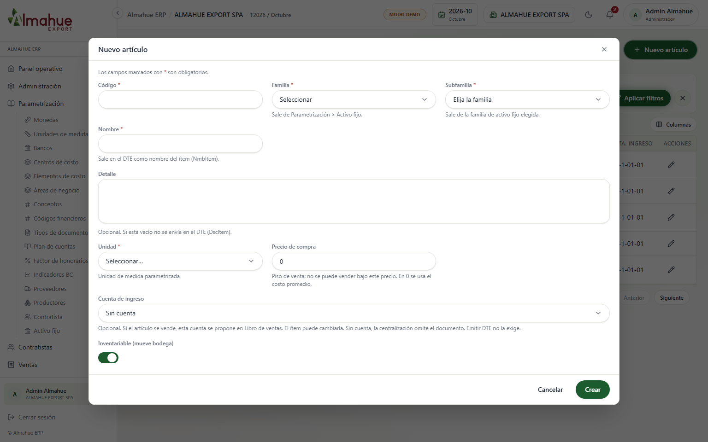
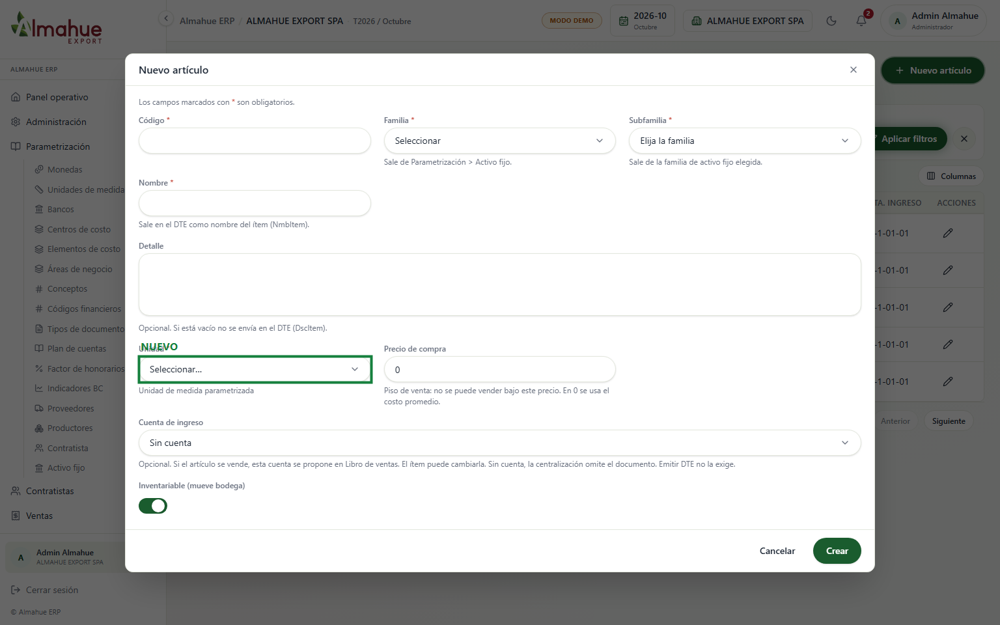
Unidades de medida con aviso si faltan" />Qué cambió: La unidad de medida ahora se consulta desde el catálogo dinámico de unidades de medida (api.getUnidades), evitando textos libres y discrepancias con el catálogo del SII. Si la empresa no tiene unidades configuradas se bloquea y se muestra aviso con advertencia en el label. No se presionó Crear.
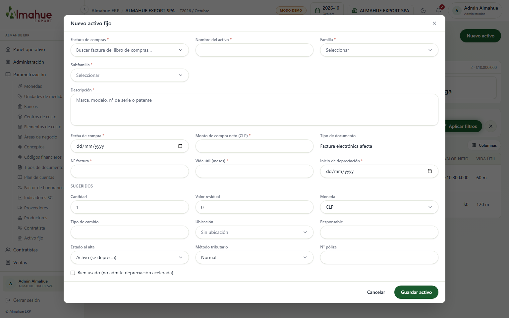
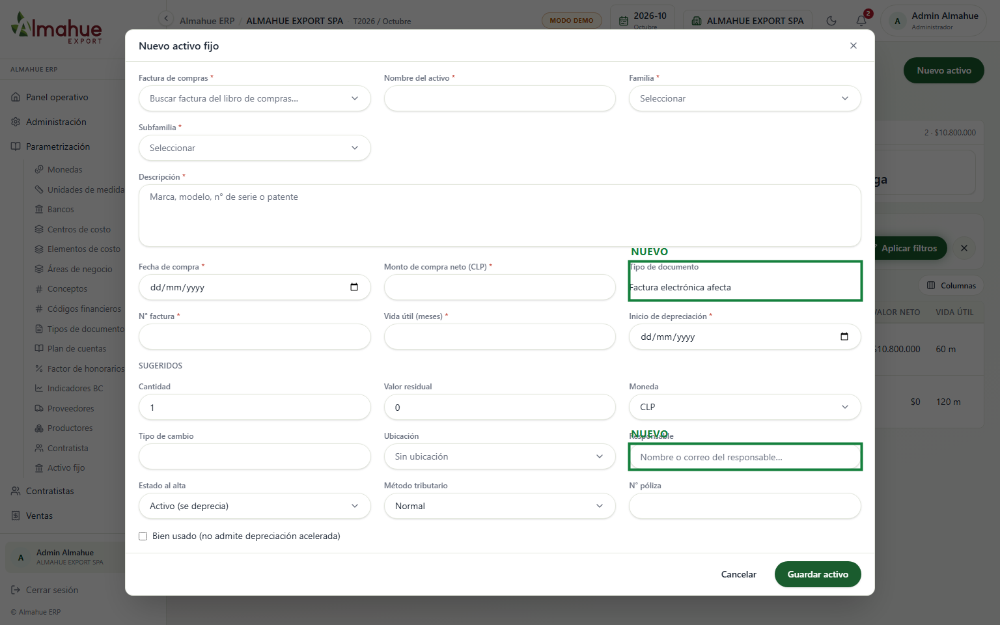
Qué cambió: Los tipos de documento ahora reflejan los nombres vigentes en Parametrización › Tipos de documento. El campo Responsable ahora ofrece sugerencias y autocompletado conectado al catálogo de usuarios reales del sistema vía datalist. No se presionó Guardar activo.
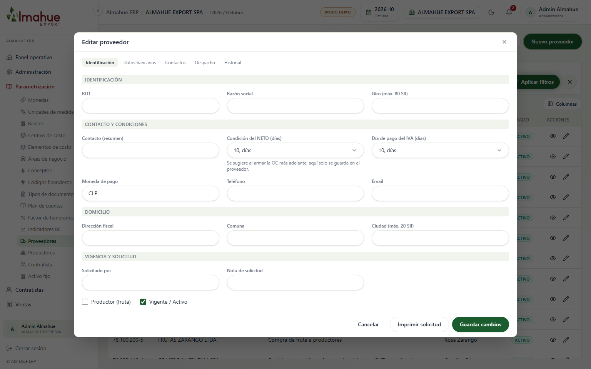
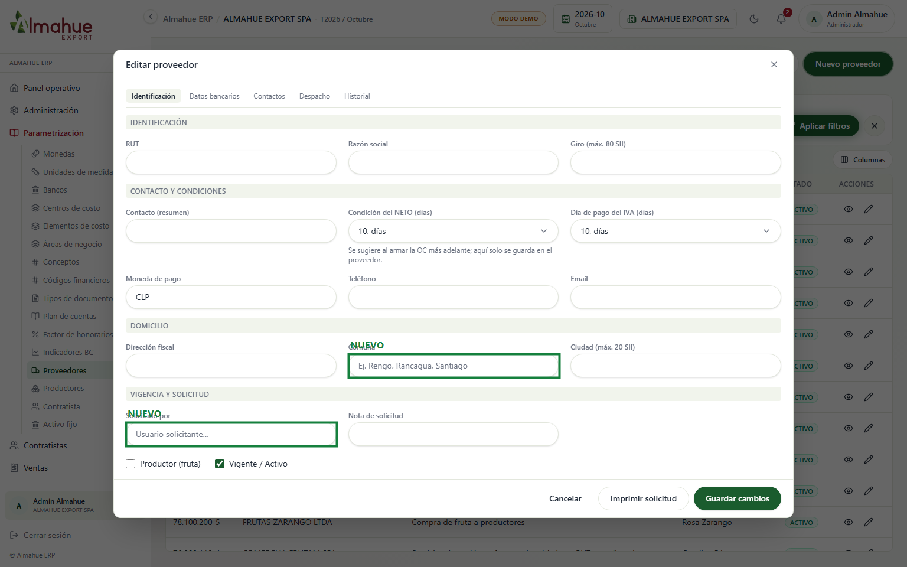
Qué cambió: La comuna fiscal ahora incorpora autocompletado del catálogo de comunas de Chile para evitar errores de tipeo que rechacen la validación DTE del SII. Los campos Vendedor y Solicitado por ahora se autocompletan con los usuarios activos de la empresa. No se presionó Guardar cambios.
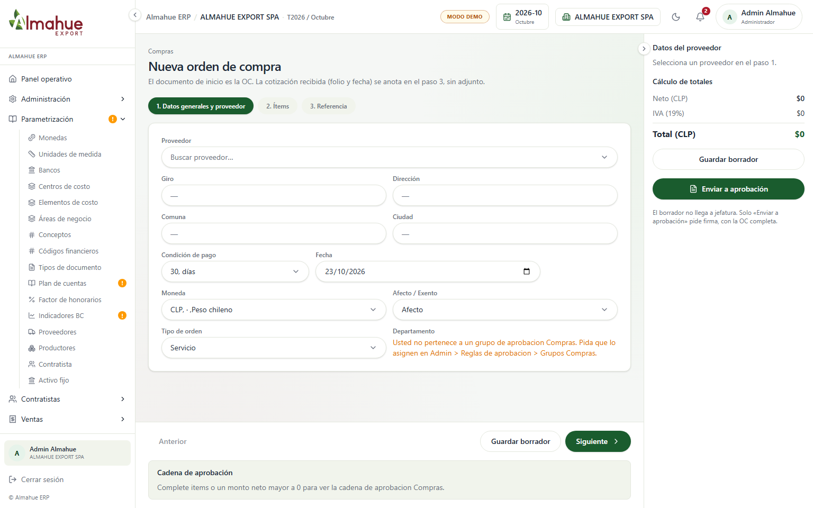
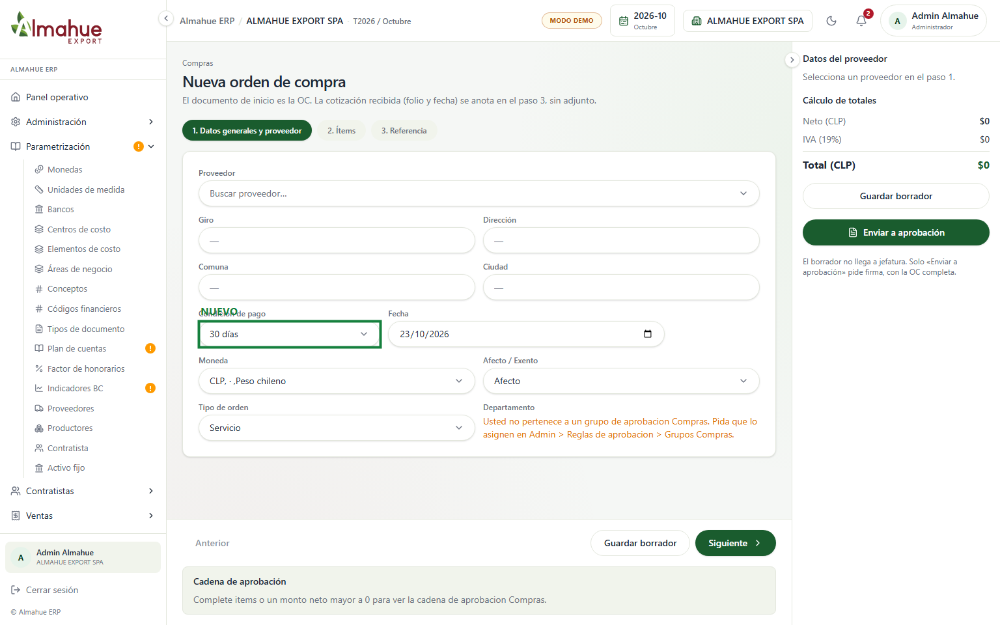
Qué cambió: Se agregaron opciones comerciales estandarizadas (Contado, 15, 30, 45, 60, 90, 120 días) con marca automática cuando coincide con la condición pactada en la ficha del proveedor seleccionado. El tipo de referencia se estructuró con opciones formales (Cotización, Contrato, Licitación, Acuerdo por correo). No se presionó Enviar a aprobación.
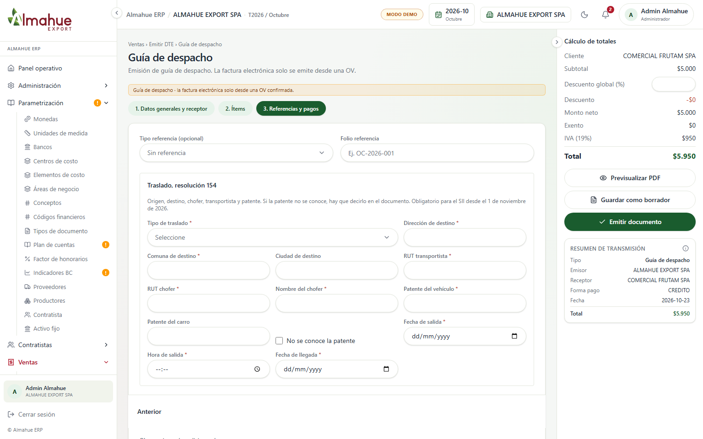
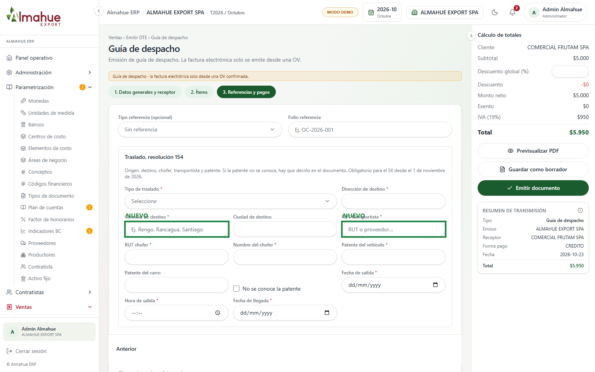
Qué cambió: En los datos de traslado (Resolución 154 obligatoria SII), la comuna de destino se vinculó al catálogo de comunas oficiales de Chile y el RUT del transportista ofrece sugerencias automáticas desde el catálogo de proveedores y contratistas registrados. No se presionó Emitir documento.
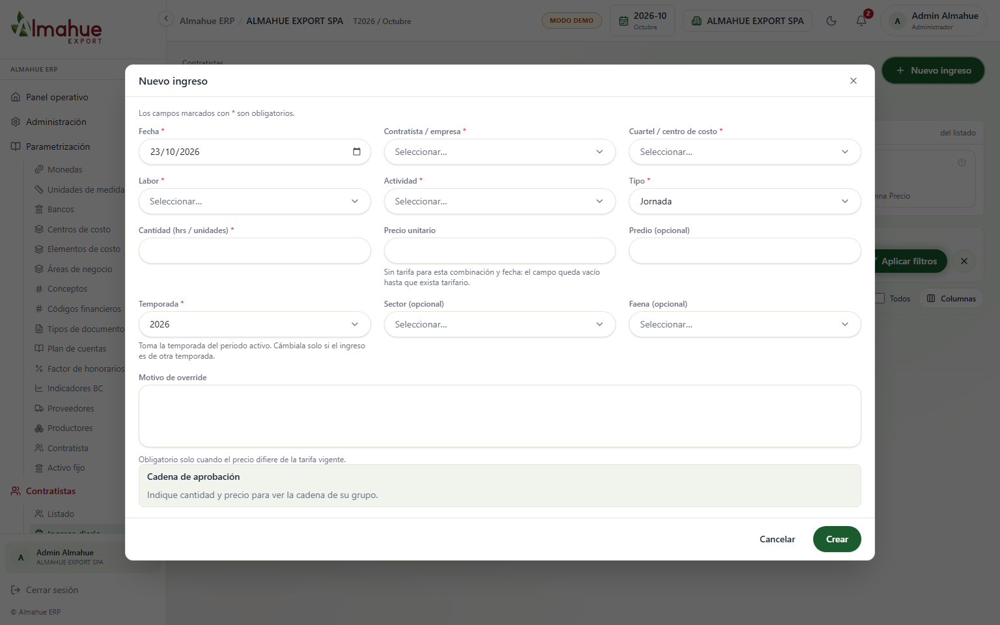
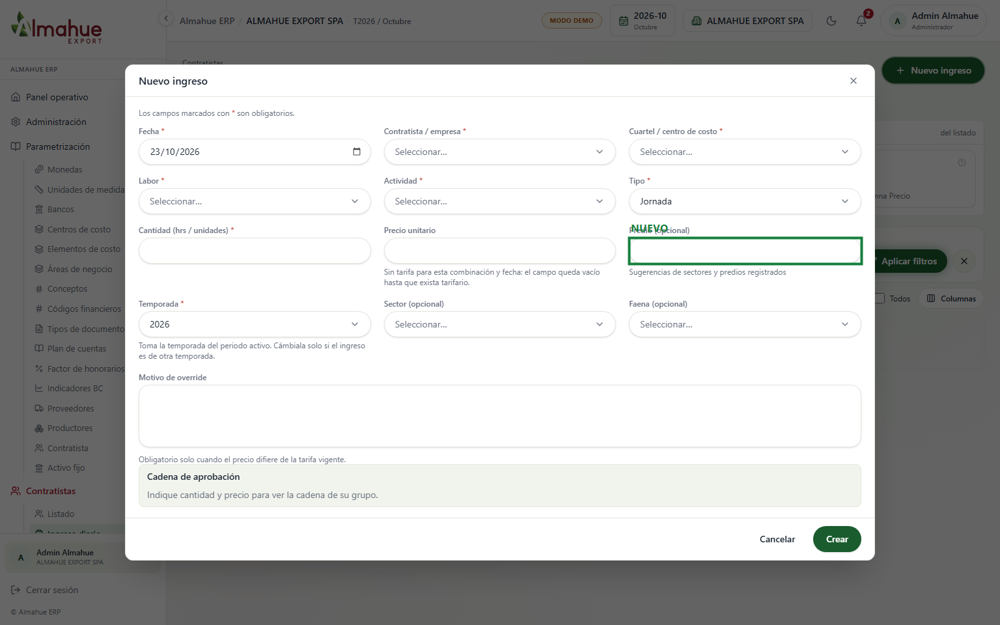
Qué cambió: El campo Predio ahora ofrece un datalist dinámico poblado a partir de los sectores parametrizados y registros previos del sistema, garantizando uniformidad en los reportes agrícolas y proformas. No se presionó Crear.